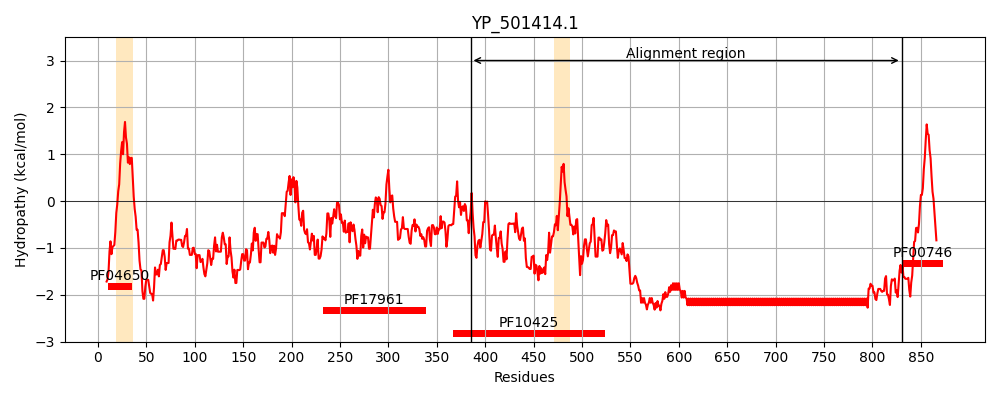
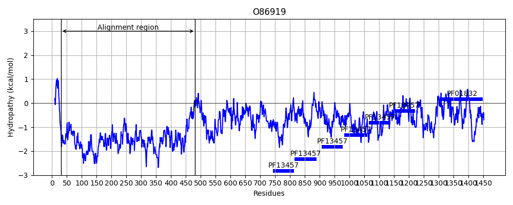
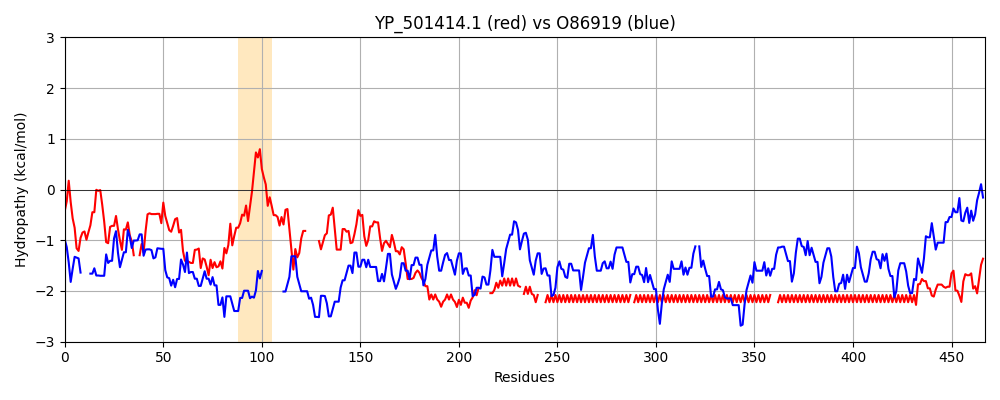

Hit Accession: O86919
Hit TCID: 1.C.105.2.7
Hit Description: gnl|BL_ORD_ID|7698 gnl|TC-DB|O86919|1.C.105.2.7 AAS surface protein OS=Staphylococcus saprophyticus GN=aas PE=4 SV=1
Mach Len: 467
e:0.000000
Query TMS Count : 2
Hit TMS Count: 0
TMS-Overlap Score: 0.000000
Predicted Substrates:CHEBI:25367;molecule
BLAST Alignment:
Score: 248 , Bit scores: 100 bits, E-value: 2.2e-21, Alignment length: 467, Percentage identity: 21
Query: 385 SGQNTYKQTVFVNPKQRVLGNTWVYIKGYQDKIEES--SGKVSATDTKLRIFEVNDTSKLSDSYYADPNDSNLKEVTDQFKNRIYYEHPNVASIKFGDITKTYVVLVEGHYDNTGKNLKTQVI------QENVDPVTNRDYSIFGWNNENVVRYGGGSADGDSAVNPKDPTPGPPVDPEPSPDPEPEPTPDPEPSPDPEPEPSPDPDPDSD-----SDSDSGSDSDSGSDSD-SESDSDSD---SDSDSDSDSDSESDSDSESDSESDSDSDSDSDSDSDSDSDSDSD-SDSDSDSDSDSDSDSDSDSDSDSDSDSDSDSDSDSDSDSDSDSDSDSDSDSDSDSDSDSDSDSDSDSDSD---SDSDSDSDSDSDSDSDSDSDSDSDSDSDSDSDSDSDSDSDSDSDSDSDSDSDSDSDSDSDSDSDSDSDSDSDSDSDSDSRVTPPNNEQKAPSNPKGEVNHSNKVS 830
+ NT QT P + VL + + Q K E S + +S T T +V D S D+ Y D + ++Q N+ Y D++ DN K+L T+ QEN + T+ S NE S++ + ++ + + + + + E + + S D + + + D SD ++S++ +D+ S+ D + SD D SD ++ D +++S +++D S+ D S D+ SD++ SD ++S++ +D+ S+ D + SD + D D+ SD+++ D ++S++ +D S+ D + SD D+ SD+++ +D + + +++ ++ + SD D+ SD+++ +D + + D + S D +D +++V+ E N S KV+
Sbjct: 30 AASNTQDQT----PNKNVLDDEKALNQSEQIKSEISKPTTNISGTQTYQDPTQVKDASSNEDTNYDAQLDELNDQTSEQTSNQDTYNQETDVQEDQQDVSS----------DNDTKSLDTEQTSVEDNNQENEENNTDSIQSETNSTNEASQTSNDVSSNAEETNTDENSSDVANQNEPVAQNDKAETSNEDVASSDVKQDGTHSDDNASDDLTDQNESETLNDNAVSSNEDVASSDVKQDGTHSDDNASDDLTDQNESVAQNDKAETSNEDVASSDVKQDDTHSDANASDVADQNESETQNDNAESSNEDDVASSDVNQD-DTHSDANASDDVKDQNESETQNDKAETSNEDDVASSDVKQDDTHSDANASDIADQNESVAQNDKAETSNEDVASSDKQDDTHSDANASDIADQNESATQDDKATSKEDDVVSNDKQDNAKVSNIIKEASTAENKVQPATFSAKVT 481 | Protein Hydropathy Plots: |
|---|
|  |  |
Pairwise Alignment-Hydropathy Plot:
|
|---|
|  |